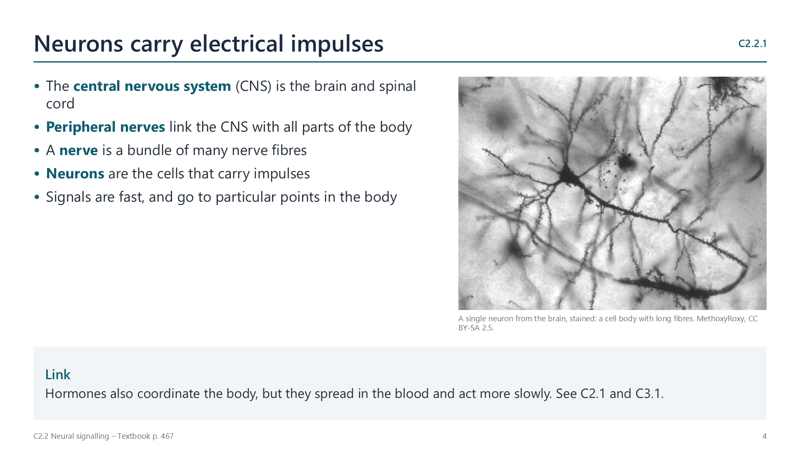

What neurons are
pp. 467–469The nervous system is made of cells called neurons. The brain and spinal cord form the central nervous system, and peripheral nerves link it with the rest of the body.
A neuron has a cell body, containing cytoplasm and a nucleus, with long nerve fibres projecting from it. Dendrites are many short fibres that bring impulses to the cell body. An axon is one long fibre that carries impulses away. Electrical impulses travel along these fibres.
Sensory neurons bring signals from receptors, relay neurons connect neurons in the CNS, and motor neurons take signals out to effectors, which are muscles and glands.

Watch out: receptors detect stimuli and effectors respond to them.